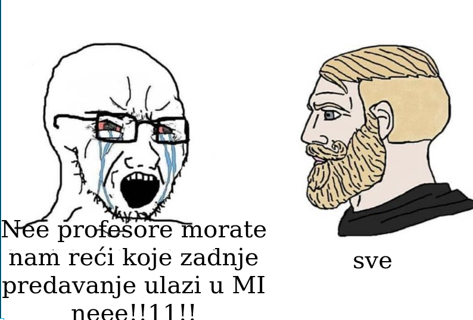

Ima li netko da ide na predmet sigurnost komunikacija? Jesu li rekli stogod na prvom predavanju u cetvrtak?
Može li netko tko je bio na uvodnom predavanju objasniti što znači '‘s obzirom na to da su predavanja obavezna, sama prisutnost se ne boduje’' u prezentaciji? Postoji li neki prag za dolaznost ili nešto slično?
null ne postoji. to je ona shema “sva predavanja na FER-u su obavezna”, samo što u praksi baš i nisu
kakva su bila prva 3 predavanja? jel se isplati dolaziti ili bolje uciti od doma?
Daeyarn ja sam bio samo na ovom danas pa mozda nisam nesto relevantan, ali je prof uglavnom pricao ono sto je na prezentacijama Pa bi rekao da ne gubis nesto puno ako ne dodes A prezentacije se cine okej
jel se labosi samo predaju na moodle ili ih se i brani uživo? ako se ide uživo, jel postoje neki termini da se mogu birati ili nam odrede oni
Daeyarn ja sam po uvodnoj prezentaciji shvatio da se samo na moodle preda i to je to.
samo_vagabundo Ti si bog sicckoma
DnkCkv fala maki, vidimo se na roku
Receno danas nesto u vezi MI? Kako ce bit koncipiran, koje gradivo ulazi?
Me nešto kao srs završni ispit
Me Xiaomikuc strikes again. Kad je vec obradio 8 prezentacija :/
jesu onda na predavanjima obradena i 7. i 8. tema ili do 6-TLS?
Rops 
[obrisani korisnik] Sve.
🤡 evaluira se ko true pametnom dosta
Mikuc je samo jedan kotačić u baziranom zavodu